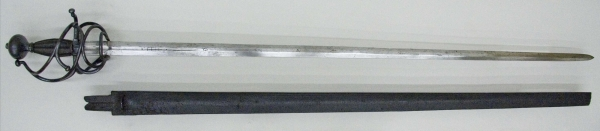
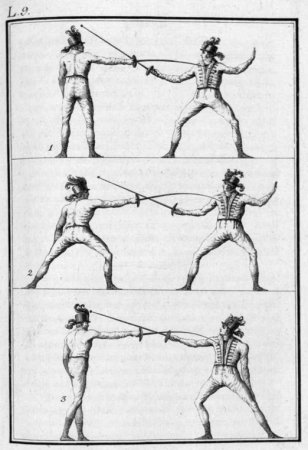
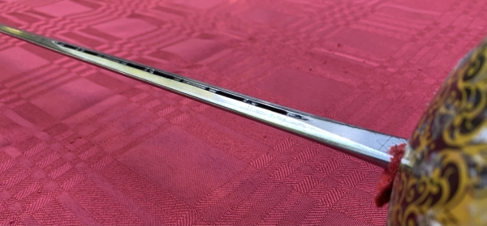

The Rapier: A Beginner's Guide
Photo Gallery
Martial Red/
Shutterstock.com
The Rapier
What makes a rapier?
History
Rapier Today
Olympic Fencing vs. Rapier
How to Start
Club Options
Gear
Tournaments
Risks of the Rapier
Gallery
Further Reading

Metropolitan Museum of Art
Metropolitan Museum of Art

Don Manuel Antonio de Brea

Laulette Edwards